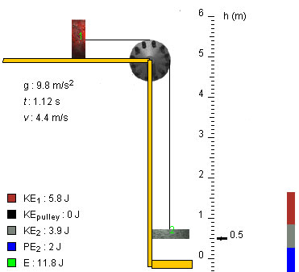

Yes, the speed of both blocks at the instant shown in the snapshot when block 2 is at elevation h = 0.5 m is 4.4 m/s.
Solution
Plan It. Since the blocks and pulley are assumed to not experience any dissipative friction, we can use the conservation of mechanical energy E to find the speed at an instant when block 2 has a given elevation. The energy at the initial instant when the blocks start moving is equal to the final energy when block 2 has elevation hf. Since the expression for the final energy involves the final speed vf via the kinetic energies of the two blocks at that instant, this yields an equation for vf that can be solved.
Set It Up. We need to define the system to which we want to apply energy conservation. We take it to consist of the two blocks, the pulley, the string, and the earth.
The pulley and string are assumed to be massless and therefore have zero kinetic energy. Thus, the total kinetic energy KE is equal to the sum of the kinetic energies of just the two blocks,
KE = (m1/2) v2 + (m2/2) v2
The gravitational potential energy PE of the pair consisting of the earth and block 2 is
PE = m2gh
if we take the potential energy to be zero when the block makes contact with the platform. (Here, the elevation h is the height above the platform.) The potential energy of the pair consisting of block 1 and the earth remains constant because block 1 moves horizontally so that this potential energy does not need to be entered into the expression for the mechanical energy of the system. Thus, we have the following expression for the mechanical energy of the system:
E = KE + PE = (m1/2) v2 + (m2/2) v2 + m2gh.
Solve It. Equating the initial and final mechanical energies gives
(m1/2) vi2 + (m2/2) vi2 + m2ghi = (m1/2) vf2 + (m2/2) vf2 + m2ghf.
Using vi = 0, this simplifies to
m2g(hi - hf) = (m1+m2)/2 vf2.
This equation can be solved for vf. The answer is